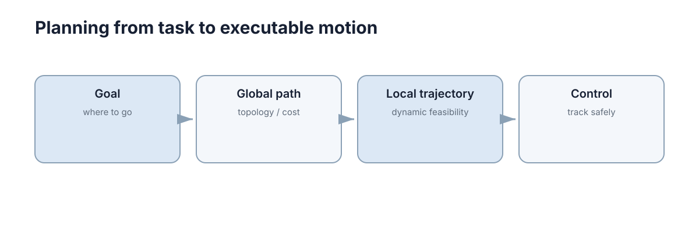

Path & Motion Planning
规划解决的是：从当前状态到目标状态，如何找到一条可行、尽量安全且代价合适的运动方案。 “路径能连通”和“机器人真的能沿它运动”是两个不同层次：前者是几何与拓扑问题，后者必须把时间、速度、加速度、转向半径和不确定性一起考虑。本章先把这两层拆开，再说明它们各自用什么算法、在什么条件下会失败。

图搜索适合已经离散化的空间
栅格地图中，每个格子可以看作节点，相邻可通行格子之间形成边。Dijkstra 根据累计代价扩展节点；A* 在此基础上加入启发函数 \(h(n)\)，优先搜索更可能靠近目标的方向：
这里 \(g(n)\) 是从起点到节点 \(n\) 的已知最小代价，\(h(n)\) 是对 \(n\) 到目标剩余代价的估计。只要启发函数不高估真实剩余代价，A* 仍能保持最优性，同时通常比 Dijkstra 少扩展大量无关区域。
离散化本身有两个容易忽略的参数：
- 栅格分辨率 \(r\)：\(r\) 取小则路径精细、计算量与内存按 \(O(r^{-2})\) 增长；\(r\) 取大则窄通道可能被“抹平”，出现假不可达。
- 连通度：4 邻域只能走水平/垂直，路径长度比欧氏距离最多长 \((\sqrt{2}-1)/\sqrt{2}\approx 29\%\)；8 邻域允许对角，误差降到约 \(8\%\)，代价是转弯更生硬。
因此“图搜索能用”的前提是：环境的空间维度和分辨率已经让状态空间可枚举。 一旦维度升到 7 自由度机械臂，直接网格化的节点数是 \(O(r^{-7})\)，这条路线就崩了。
另一个容易吃亏的地方是边的代价定义。同一张栅格图，边的权重取法不同，搜索出来的路径风格完全不同：
| 代价定义 | 表达式 | 得到的路径 | 副作用 |
|---|---|---|---|
| 纯长度 | \(w=\lVert v-u\rVert\) | 最短，常贴障碍 | 离障碍零余量 |
| 长度 + 障碍惩罚 | \(w=\lVert v-u\rVert\,(1+\lambda c_v)\) | 走通道中线 | \(\lambda\) 大时绕远 |
| 长度 + 转弯惩罚 | \(w=\lVert v-u\rVert+\mu\,\lvert\Delta\theta\rvert\) | 少拐弯、更平滑 | 需要把朝向纳入状态 |
| 长度 + 地形代价 | \(w=\lVert v-u\rVert\,(1+\lambda(c_v+c_{v\to u}))\) | 绕开坡道/草地 | 参数多、难标定 |
其中 \(c_v\in[0,1]\) 是节点 \(v\) 的代价地图取值（0 表示完全自由，1 表示致命障碍），\(\lambda\ge 0\) 是惩罚强度。只要 \(c_v\ge 0\)，这类加权代价仍然非负，A* 的可采纳性条件不受影响；但如果为了“抄近道”允许负代价，Dijkstra 与 A* 的最优性证明立刻失效。
工程上还有两个实现细节直接影响扩展节点数：用开放列表（open list） 保存待扩展节点、封闭列表（closed list） 记录已定型节点，能避免重复入队；当多条路径代价相等时，按 \(h\) 值做 tie-breaking（优先扩展 \(h\) 更小的）可以把扩展节点数再降 10%–30%，且完全不影响最优性。
图搜索与启发函数
三种最常用变体的差别只在优先级函数的构造，但工程后果差别很大。
| 算法 | 优先级 \(f(n)\) | 最优性 | 完备性 | 典型扩展节点数（同一地图） |
|---|---|---|---|---|
| Dijkstra | \(g(n)\) | 最优 | 完备 | 约 \(6.0\times10^{5}\) |
| A* | \(g(n)+h(n)\)，\(h\) 可采纳 | 最优 | 完备 | 约 \(4.0\times10^{4}\) |
| 加权 A*（\(\varepsilon=1.5\)） | \(g(n)+1.5\,h(n)\) | 有界次优 | 完备 | 约 \(8.0\times10^{3}\) |
| 贪婪最佳优先 | \(h(n)\) | 不保证 | 非完备（有限图完备） | 约 \(1.5\times10^{3}\) |
上表取自一张 \(1000\times1000\) 栅格、障碍占比 20%、起点到目标直线距离约 900 格、最优路径长度 \(L^{*}\approx1400\) 格的标准设定。可以清楚看到：从 Dijkstra 到加权 A*，扩展节点数下降了近两个数量级，代价是最优路径最多长 \((\varepsilon-1)\)。
启发函数的两个性质决定结论：
- 可采纳性（admissible）：对所有节点 \(h(n)\le h^{*}(n)\)，即永不高估。可采纳 \(\Rightarrow\) A 返回最优解。\(h\equiv 0\) 时 A 退化成 Dijkstra。
- 一致性（consistent / monotone）：\(h(n)\le c(n,n')+h(n')\)。一致性是可采纳的充分条件，且保证每个节点最多被扩展一次；不一致但可采纳的启发函数仍最优，但可能重复扩展节点。
常用启发函数的紧致程度：
| \(h\) | 表达 | 可采纳条件 | 说明 |
|---|---|---|---|
| 曼哈顿 | \(\lvert\Delta x\rvert+\lvert\Delta y\rvert\) | 仅 4 邻域 | 8 邻域下高估，破坏最优性 |
| 欧氏 | \(\sqrt{\Delta x^2+\Delta y^2}\) | 任意邻域 | 对 8 邻域偏松，扩展更多 |
| 对角（octile） | \(\max(\Delta x,\Delta y)+(\sqrt{2}-1)\min(\Delta x,\Delta y)\) | 8 邻域且对角代价 \(\sqrt{2}\) | 实践中扩展最少 |
| 分离式（landmark） | 由地标预计算下界 | 需预计算 | 需换内存换离线时间 |
启发函数的“估计误差”直接换算成扩展节点数。 记相对误差 \(\eta=(h^{*}-h)/h^{*}\)，在均匀代价栅格上，A* 的扩展区域近似是一个以起点和终点为焦点的椭圆，其面积随 \(\eta\) 增大而膨胀。\(\eta=0\)（完美启发）时只扩展最优路径上的节点；\(\eta=1\)（\(h=0\)，即 Dijkstra）时扩展到整个可达区域。这解释了为什么花力气设计紧致启发函数通常是划算的。
加权 A* 引入次优上界：若 \(h\) 可采纳，\(f=g+\varepsilon h\) 搜索得到的解满足
即最坏情况下路径代价是最优的 \(\varepsilon\) 倍。\(\varepsilon=1.5\) 时允许最多 50% 的额外代价，但实测往往只有 3%–10%——次优界是上界，不是期望值。
采样规划适合高维连续空间
机械臂有很多关节，自由空间难以完整离散化。RRT 一类方法通过随机采样逐步构造可达树，不需要先显式建立整个配置空间网格。
其核心流程是：每次随机取一个配置 \(q_{\text{rand}}\)，找到树中距离最近的节点 \(q_{\text{near}}\)，沿连线朝 \(q_{\text{rand}}\) 前进固定步长 \(\delta\) 得到 \(q_{\text{new}}\)，若这段线段无碰撞则加入树中。因此搜索树是边探索边生长的，而不是预先存在的。
这一族方法的关键优势是复杂度随维度增长温和（通常接近 \(O(\log n)\) 级别的碰撞检测次数），对 7–30 维配置空间仍然可用；代价是它不保证找到最优解，而且每次运行结果不同。
“配置”在这里有严格含义：配置 \(q\) 是完整描述机器人形态的广义坐标，\(d\) 自由度机械臂的配置空间 \(\mathcal{C}\) 是 \(d\) 维流形，障碍区 \(\mathcal{C}_{\text{obs}}\) 是那些会让机器人发生碰撞的配置集合。规划的目标是找到一条完全落在自由空间
内的连续曲线。碰撞检测看的是整条边 \(q(s)=(1-s)q_{\text{near}}+s\,q_{\text{new}},\ s\in[0,1]\)，而不是两个端点——这是采样规划里最容易被实现错的地方，也是“路径穿墙”的典型来源。
采样规划与图搜索的对照可以一句话记住：图搜索先有离散图再搜索；采样规划边探索边构图。 前者需要显式枚举状态，后者只需要一个能回答“这两个配置之间的运动是否碰撞”的碰撞检测函数。
采样规划与概率完备性
| 方法 | 完备性 | 最优性 | 适合的空间维度 | 参数敏感性 | 典型用途 |
|---|---|---|---|---|---|
| RRT | 概率完备 | 无 | 中高维（5–30） | 步长 \(\delta\) 敏感，结果随机 | 快速找一条可行路径 |
| RRT* | 概率完备 | 渐近最优 | 中高维 | 更敏感，需大量采样才收敛 | 质量要求高的机械臂规划 |
| PRM | 概率完备（对特定采样） | 基础版无，PRM* 渐近最优 | 中高维、静态环境 | 采样点数量 \(N\) 敏感 | 多次查询的固定环境 |
| 网格 A* | 完备（分辨率内） | 最优 | 低维（2–3） | 分辨率敏感 | 移动机器人二维导航 |
概率完备性（probabilistic completeness） 的准确含义是：若解存在且路径有正的开集“宽度”，则当采样数 \(n\to\infty\) 时，算法找到解的概率趋于 1。它不是“有限步内一定找到”，也不是“找不到就等于无解”——这是最容易误用的地方。
RRT* 通过两个额外步骤获得渐近最优：
- 重选父节点：对新节点 \(q_{\text{new}}\)，在以它为中心半径 \(r(n)\) 的邻域内，选累计代价最小的节点作为父节点；
- 重连（rewire）：把邻域内已有节点尝试改接到 \(q_{\text{new}}\) 上，若绕行代价更低则改接。
半径需满足 \(r(n)=\gamma\left(\frac{\log n}{n}\right)^{1/d}\)（\(d\) 为空间维度），才能保证渐近最优。维度越高，同一 \(n\) 下有效半径越小，收敛越慢——在 7 维机械臂上，RRT* 往往需要数万次采样才明显优于 RRT。
参数敏感性是实机上更实际的约束：
| 参数 | 取值偏小 | 取值偏大 | 经验起点 |
|---|---|---|---|
| 步长 \(\delta\) | 采样效率低、树增长慢 | 易“跳过”窄通道、碰撞检测变粗 | 机器人特征尺寸的 1–2 倍 |
| 目标偏置概率 | 收敛慢 | 易被困在局部、树偏斜 | 0.05–0.10 |
| 碰撞检测余量 | 贴障碍，实机抖动 | 通道被堵，误判不可达 | 机器人半径 + 5–10 cm |
| 邻域半径 \(\gamma\) | 退化为普通 RRT | 计算量爆炸 | 由 \(r(n)\) 公式定标 |
“找不到路径”在采样规划中有两种截然不同的含义：一是真无解，二是采样不够或余量过大导致概率性漏检。诊断方法是固定随机种子重复跑 20–50 次：若偶尔成功，说明是概率问题而非拓扑问题。
路径与轨迹不完全相同
路径主要描述几何位置序列；轨迹还包含时间、速度和加速度。一个几何上不碰障碍的急转弯，车辆可能因为最小转弯半径而无法执行。
正式地，路径是映射 \(\sigma:[0,1]\to\mathcal{C}_{\text{free}}\)，\(\sigma(s)\) 只依赖弧长参数 \(s\)；轨迹是映射 \(x:[0,T]\to\mathcal{C}\)，同时给出各时刻的速度与加速度，必须满足微分约束
差别在数值上很直观：一段直角转弯的路径长度是 \(L\)，若车辆最大侧向加速度为 \(a_{\max}\)、速度恒为 \(v\)，能通过的最小转弯半径是
\(v=3\ \text{m/s}\)、\(a_{\max}=3\ \text{m/s}^2\) 时 \(R_{\min}=3\ \text{m}\)；路径若给出半径 1 m 的直角弯，则必须降速到 \(v=\sqrt{a_{\max}R}\approx1.73\ \text{m/s}\) 才能执行。几何可行 ≠ 动态可行，这正是“路径”与“轨迹”分层的必要性。
从路径到轨迹的这一步叫时间参数化（time parameterization）：给定路径 \(\sigma(s)\)，求一个单调递增的时间映射 \(s(t)\)，使速度与加速度落在限值内：
沿路径的几何曲率 \(\kappa(s)\) 给出额外的向心约束
即曲率越大，允许的速度上限越低：\(\kappa=1\ \text{m}^{-1}\)、\(a_{\text{lat,max}}=4\ \text{m/s}^2\) 时 \(v\le2\ \text{m/s}\)。工程上常用的做法是先把限速曲线按曲率算出来，再对它做前后向扫描取最小，最后按最小时间律积分出 \(s(t)\)。
另一个实际约束是避障余量随时间变化：静态地图上安全的位置，在有动态障碍时可能不再安全。因此轨迹层通常只在 3–10 s 的预测视界内做完整参数化，超出视界仍用路径表示。
因此真实规划通常要把机器人尺寸、最大速度、转向约束和安全距离加入可行性检查。
轨迹优化与动力学可行性
轨迹优化把规划写成带约束的数值优化问题：在满足动力学与障碍约束的前提下最小化一个代价泛函。常见形式为
其中 \(j(t)=\dot{a}(t)\) 是 jerk（加加速度），\(w_a,w_j,w_t\) 是权重。在离散时间上用 \(N\) 个采样点近似，决策变量规模约 \(N\times\dim(x)\)，用二次规划（QP）或非线性规划（NLP）求解。
代价函数各项的物理意义与调参后果：
| 惩罚项 | 作用 | 权重偏大时现象 | 权重偏小时现象 |
|---|---|---|---|
| 加速度 \(w_a\) | 限制惯性载荷、减少打滑 | 轨迹过于保守、耗时增加 | 电机接近饱和、轮胎打滑 |
| jerk \(w_j\) | 抑制抖动、保护机械结构 | 轨迹过度平滑、跟不上避障 | 高频抖动、乘客/货物不适 |
| 时间 \(w_t\) | 缩短总时长 | 逼近动力学极限、跟踪误差大 | 行动迟滞、通行效率低 |
| 离障碍距离 | 安全裕度 | 通道内无解 | 贴障碍、实机碰撞风险 |
约束分硬约束与软约束，选择直接决定求解器能否收敛：
| 类型 | 数学形式 | 违反后果 | 适合场景 |
|---|---|---|---|
| 硬约束 | \(g(x,u)\le 0\) 必须严格满足 | 无解（infeasible） | 关节限位、速度上限、几何碰撞 |
| 软约束 | \(\min \lVert\max(0,g)\rVert^{2}\) 惩罚 | 轻微违反，代价上升 | 安全距离、舒适度、非刚性上限 |
硬约束越多，可行域越小，求解器越容易报无解。 工程做法是：把不可妥协的量（关节位置、硬件速度上限）设为硬约束，把可以权衡的量（离障碍距离、jerk、时间）设为软约束并给较大权重。如果一堆硬约束同时报 infeasible，优先怀疑安全距离设得过大或起点本身就处于碰撞状态。
求解器与离散化的选择同样决定上线效果：
| 求解方式 | 适用代价 | 约束处理 | 典型规模 | 实时性 |
|---|---|---|---|---|
| 二次规划（QP） | 二次代价 + 线性约束 | 硬约束严格 | 50–500 变量 | 10–100 Hz |
| 序列二次规划（SQP） | 一般非线性代价 | 线性化后迭代 | 50–500 变量 | 10–50 Hz |
| 非线性规划（NLP） | 任意 | 一般 | 20–200 变量 | 1–20 Hz |
| 直接插值 / 样条拟合 | 无显式优化 | 事后检查 | 无 | kHz |
离散点数的换算很直接：以 7 自由度机械臂、30 个时间采样点为例，若每个采样点的位置、速度、加速度都是决策变量，决策变量数约为 \(30\times7\times3=630\)；若再加入 jerk 与障碍对偶变量，规模轻松上千。采样点从 30 增到 100，求解时间通常增长 3–10 倍，这是为什么实机上的在线轨迹优化必须限制视界长度与采样密度。
一个值得记住的判据：优化器报 infeasible 时，先不要把权重到处乱调。正确顺序是（1）把起点位姿送进碰撞检测，确认起点合法；（2）逐个把硬约束放宽为软约束，看哪一个解除后能解出解；（3）确认时间视界不是过短（视界短于制动距离时，停车约束本身就不可行）。
A* 搜索流程
import heapq
def astar(start, goal, neighbors, h):
q = [(0, start)]
cost, parent = {start: 0}, {start: None}
while q:
_, u = heapq.heappop(q)
if u == goal: break
for v, w in neighbors(u):
new = cost[u] + w
if v not in cost or new < cost[v]:
cost[v], parent[v] = new, u
heapq.heappush(q, (new + h(v, goal), v))
return parent
实际工程还需要重建路径、处理障碍膨胀和动态更新，但核心仍是“累计代价 + 对目标的估计”。下面这段说明如何把加权 A* 的权重显式暴露出来（只改优先级函数一行）：
def astar_weighted(start, goal, neighbors, h, eps=1.5):
# eps=1.0 recovers standard A*; eps>1 trades optimality for speed
q = [(0.0, start)]
g = {start: 0.0}
parent = {start: None}
while q:
_, u = heapq.heappop(q)
if u == goal:
break
for v, w in neighbors(u):
ng = g[u] + w
if v not in g or ng < g[v]:
g[v], parent[v] = ng, u
heapq.heappush(q, (ng + eps * h(v), v))
return parent, g
注意这里 \(h(v)\) 不再需要 \(goal\) 参数——如果启发函数写成“到目标的估计”，两种写法等价；显式传 \(goal\) 便于替换成地标式启发。
动态环境需要规划与控制共同处理
行人、其他车辆和临时障碍会让静态最短路快速失效。局部控制器可以处理短期小变化；当局部绕行无法继续或全局通道被堵塞时，再触发重新规划。
如果每个新障碍都重新跑完整全局规划，系统会反应过慢；如果永不重规划，局部控制又可能陷入死胡同。合理的分层是：
- 全局层：低频（0.5–2 Hz），用静态地图 + 已知障碍，输出粗路径；
- 局部层：高频（10–50 Hz），用最新传感器数据生成短时速度指令；
- 重规划触发：局部层连续 \(T_{\text{stuck}}\) 秒无法推进、或距离目标不再下降、或全局路径与新障碍相交超过阈值。
\(T_{\text{stuck}}\) 的设定要大于一次正常避让的时长：给 0.5 s 会把每次绕行都当成卡死而反复重规划，给 30 s 则机器人卡住半分钟才反应。经验值取 2–5 s，并按机器人速度缩放。
规划失败诊断
地图膨胀过大、坐标变换错误、机器人半径设置不合理，都可能让规划器认为不存在路径。调试时应先可视化起点、终点、障碍和可行空间，再调整算法参数。
常见失败模式与对应检查：
| 现象 | 最可能原因 | 先验证什么 |
|---|---|---|
| 明明有路却说无解 | 障碍膨胀半径过大 | 用机器人真实半径重跑，看是否出现解 |
| 起点被判为碰撞 | 地图有噪声点或机器人位姿漂移 | 打印起点处栅格占用值与 TF 位姿 |
| 路径穿墙 | 地图与坐标系不一致 | 同时可视化地图、路径、TF frame |
| 规划耗时随距离暴涨 | 分辨率过细 + 弱启发函数 | 统计扩展节点数，换 octile 启发 |
| 采样规划偶发找不到 | 采样不足或余量过大 | 固定种子重复 20 次，统计成功率 |
| 轨迹优化报 infeasible | 硬约束过多或起点在障碍内 | 逐个放宽软约束定位是哪个不可行 |
先看数据、再改算法：绝大多数“规划器坏了”其实是地图、TF 或参数问题，换算法只是掩盖症状。
启发函数决定搜索效率
A* 的启发函数越接近真实剩余代价，通常扩展的节点越少；但若高估真实代价，就可能失去最优性保证。设计启发函数时应在信息量与可证明边界之间权衡，并用扩展节点数而不只是最终路径长度评估搜索效率。
评估建议同时记录三个量：扩展节点数、最终路径代价、单次规划耗时。只看路径长度会误判加权 A*（它路径略长但快得多）；只看耗时又会忽略缓存与地图尺寸的影响。三者一起看，才能判断某个启发函数是真的更紧致，还是只是碰巧在这次地图上走了运。
下一步：把规划结果真正跑起来，需要闭环的定位与跟踪，见 机器人导航与控制；规划的可执行性最终由控制器的稳定性保证，见 反馈与稳定性；带约束的滚动优化是轨迹优化的另一条主流路线，见 模型预测控制；点云地图如何转成规划可用的障碍表示，见 深度与点云。